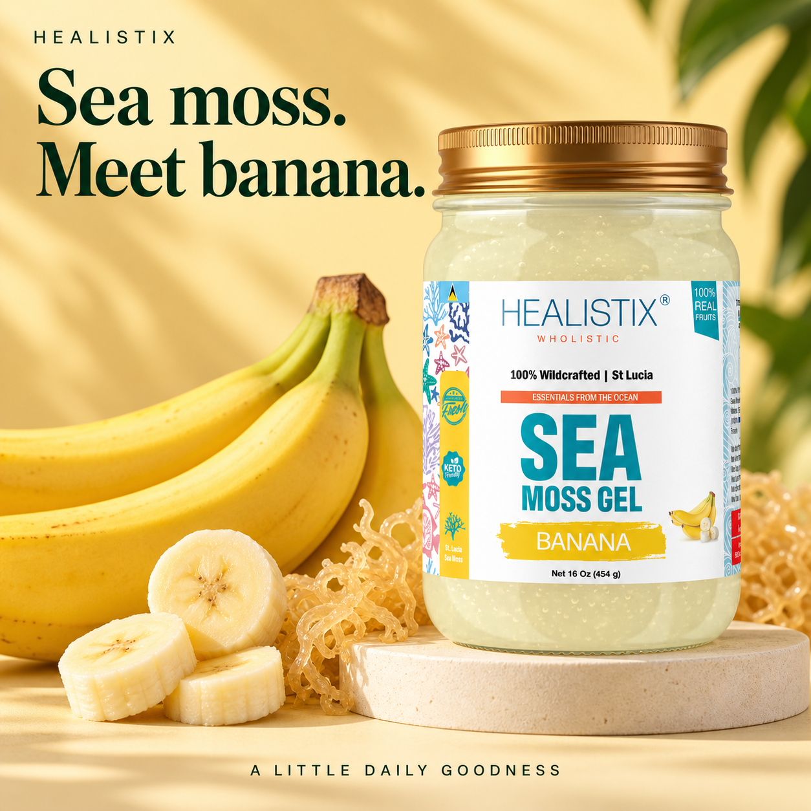
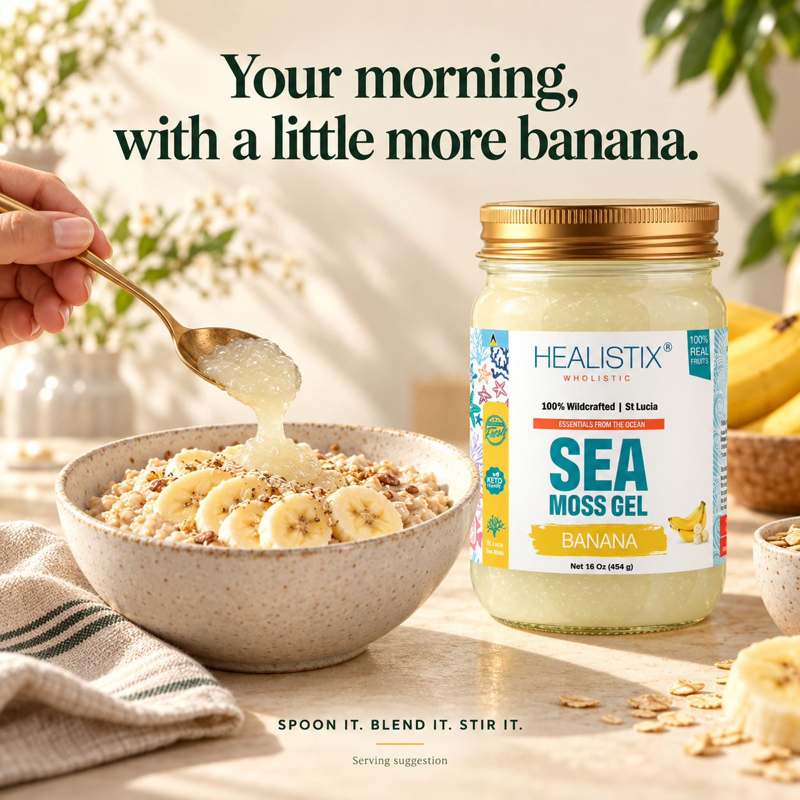
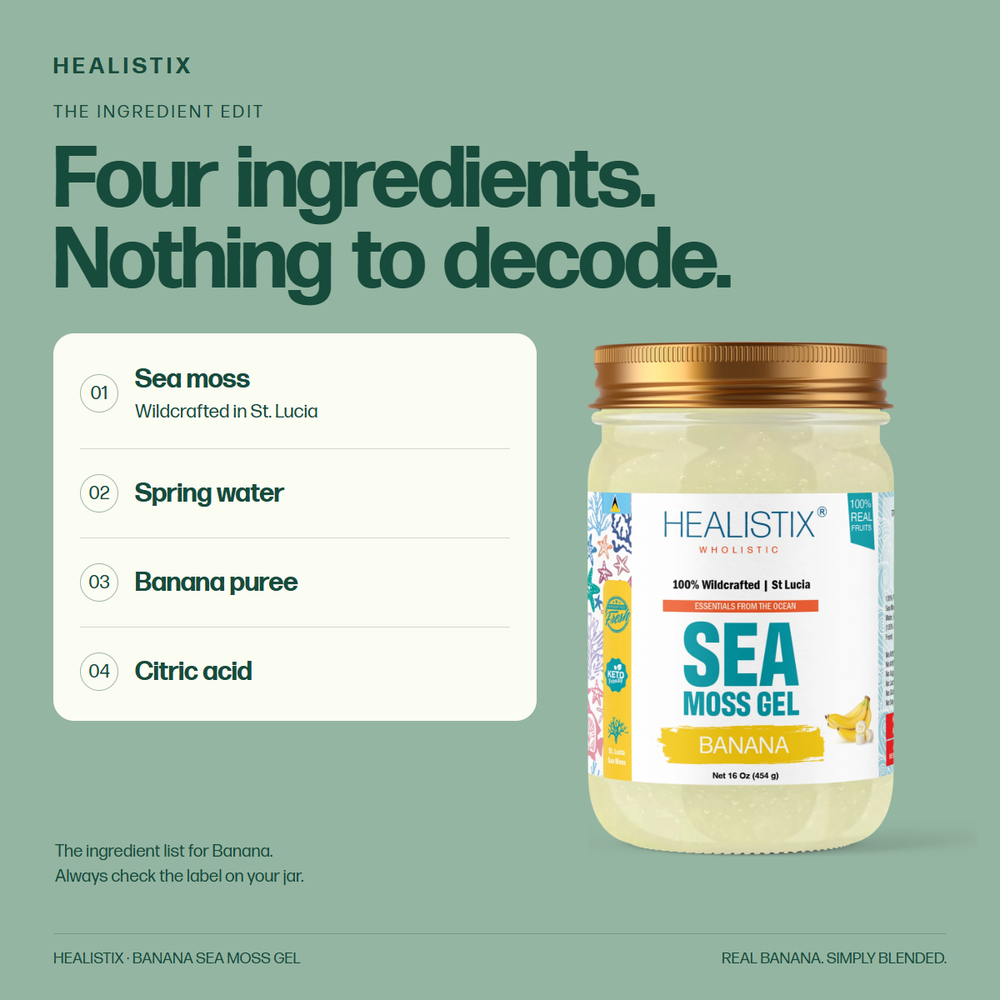
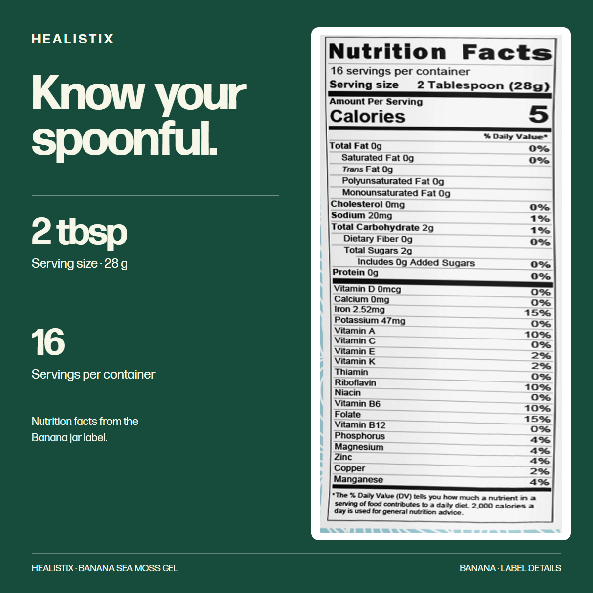
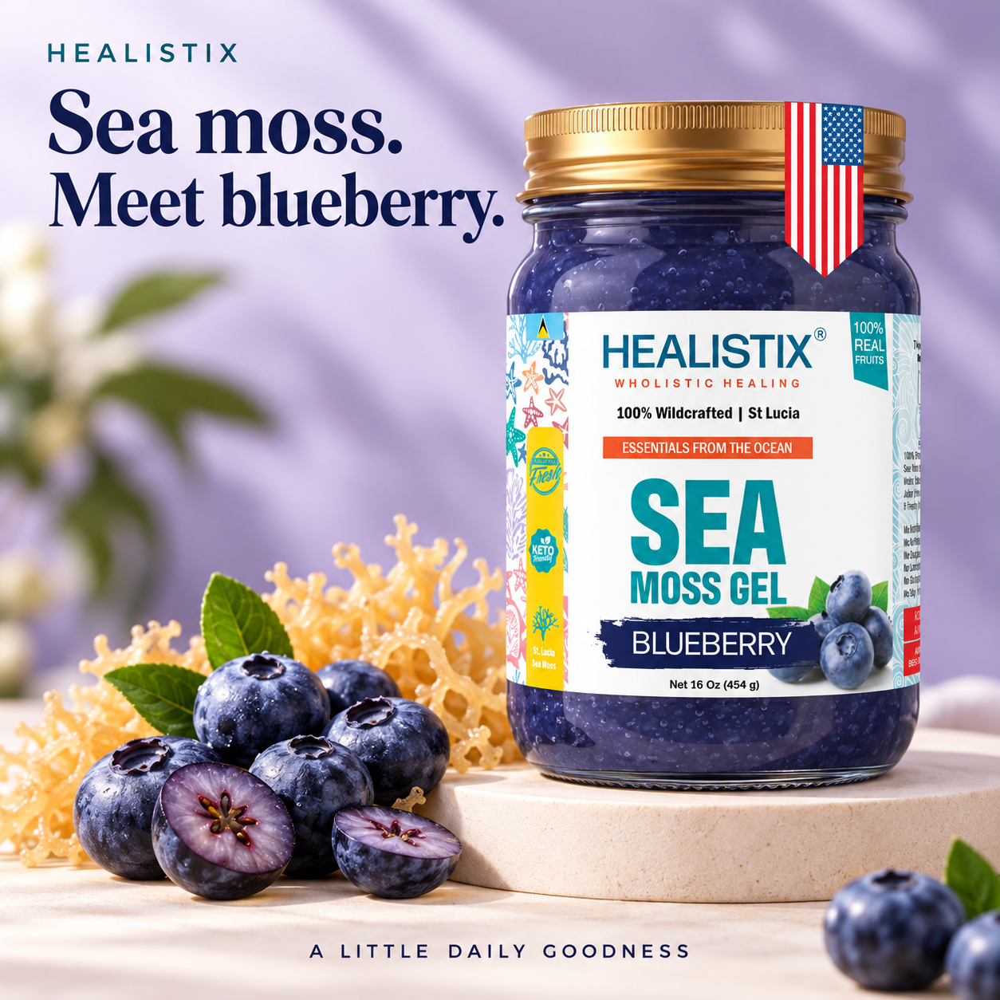
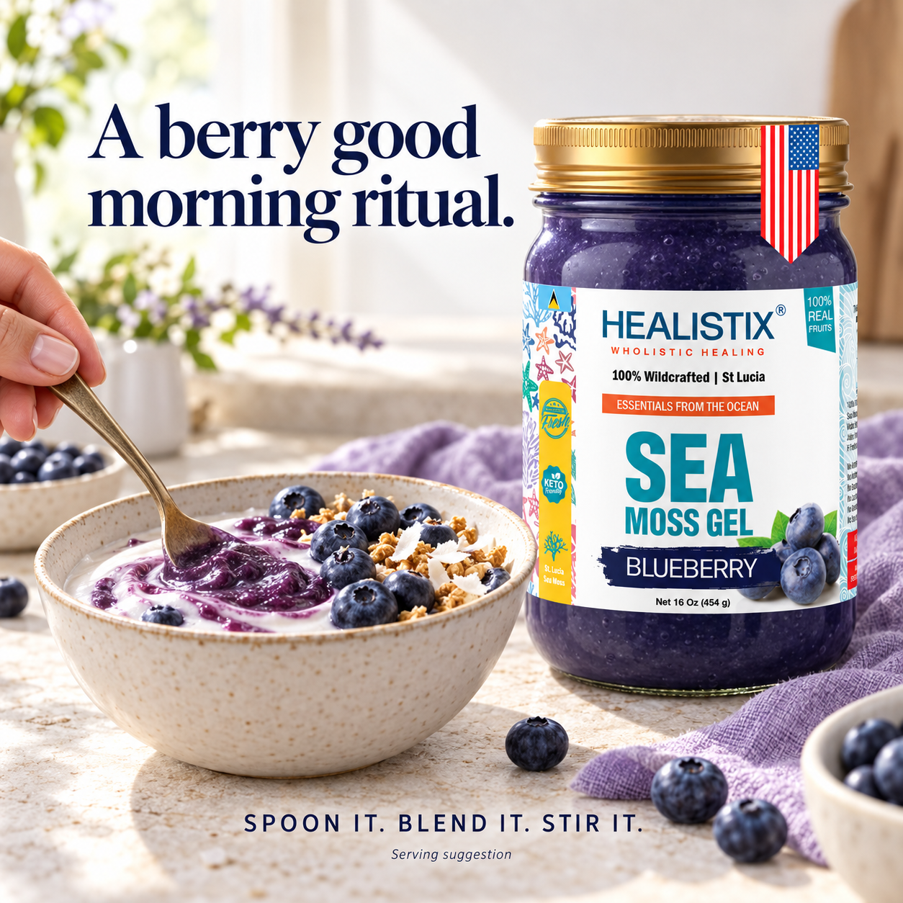
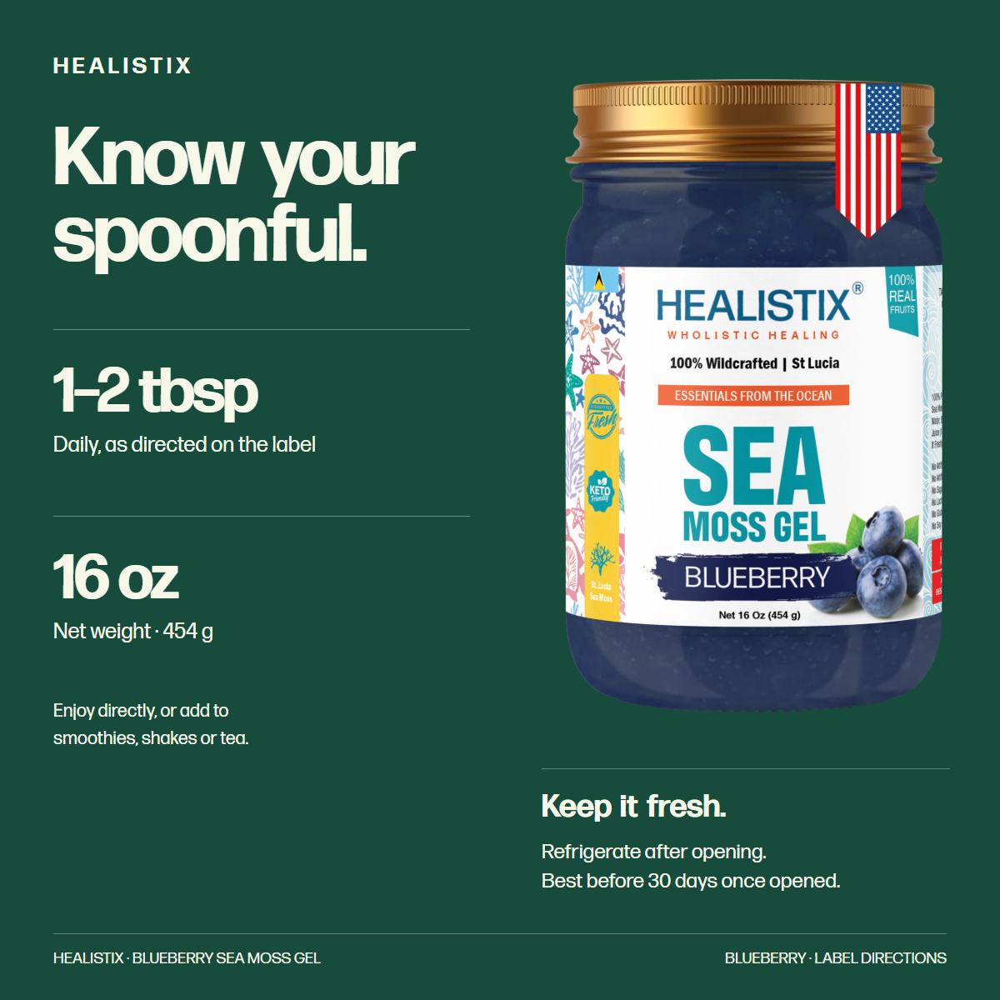
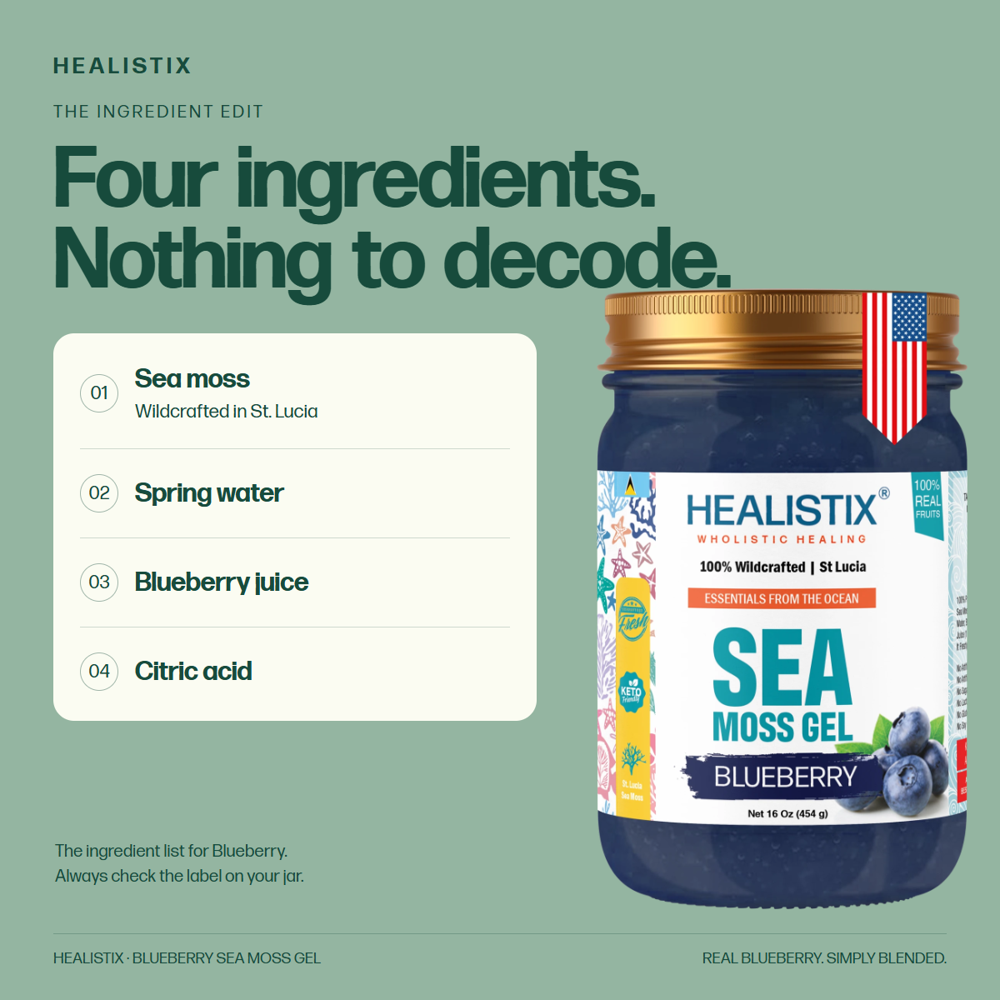
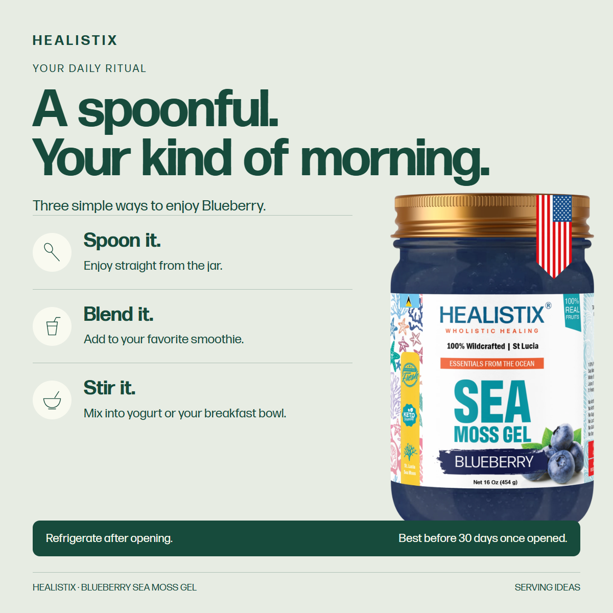

Fruit and breakfast scenes, with informative slides for both flavors. Select a thumbnail to compare.




Studio · Breakfast · Ingredients · Nutrition





Studio · Breakfast · Serving directions · Ingredients · Serving ideas